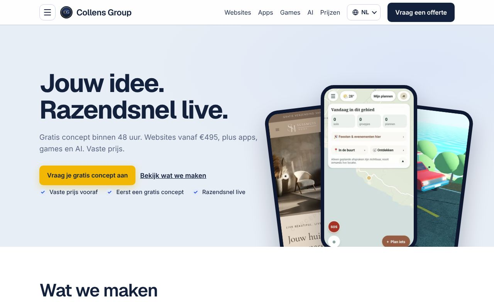
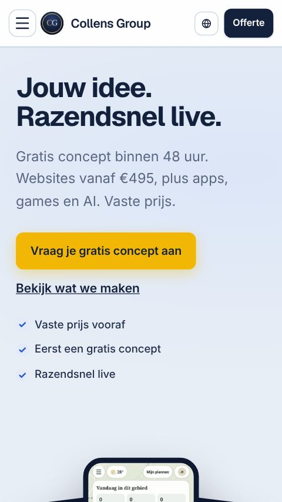

Website laten maken
Snelle, vindbare websites en webshops voor ondernemers. Vaste prijs vooraf, ruim onder wat bureaus vragen.


Vergeleken met de markt
Een eenvoudige website kost volgens Trustoo gemiddeld €500 tot €2.000, een geavanceerde website €2.000 tot €5.000 en een maatwerkwebsite €10.000 of meer. Bron: Trustoo, Wat kost een website laten maken? (aangepast 03-11-2026).
Bron marktprijzen: Trustoo, Wat kost een website laten maken? (aangepast 03-11-2026). Onze prijzen zijn eindprijzen: er komt geen btw bij.
Onze pakketten
One-page
- 1 pagina met alle info
- Contactformulier
- Mobielvriendelijk en snel
- Basis-SEO en Google-koppeling
Klaar in 3–5 dagen
Bedrijfswebsite
- Tot 6 pagina's
- Teksten op Google afgestemd
- Contact- en offerteformulier
- Snelheid en Core Web Vitals in orde
- Gratis hosting mogelijk
Klaar in 2–3 weken
Webshop
- Tot 50 producten ingericht
- iDEAL en andere betaalmethoden
- Verzending en btw ingesteld
- Je beheert zelf je producten
Klaar in 3–5 weken
Doorlooptijd in weken.
Extra
| Website-onderhoudUpdates, back-ups, kleine wijzigingen tot 30 min per maand | €29 / maand |
| Extra paginaPer pagina, inclusief SEO-tekst | €95 |
Alle prijzen zijn eindprijzen: er komt geen btw bij. Bij “vanaf” hoort het pakket zoals hierboven beschreven; wijkt jouw project daarvan af, dan krijg je vooraf een vaste prijs op maat. Externe kosten (zoals domein, tools of store-accounts) staan vooraf in de offerte.
Wat zit er wel en niet in de prijs?
| Onderdeel | One-page | Bedrijfswebsite |
|---|---|---|
| Aantal pagina's | 1 | tot 6 |
| Mobielvriendelijk en snel | ja | ja |
| Contactformulier | ja | ja, plus offerteformulier |
| Technische basis voor Google | ja | ja, met teksten op zoekwoorden afgestemd |
| Klaar in | 3–5 dagen | 2–3 weken |
Niet in de pakketprijs: een domeinnaam (meestal €10 tot €25 per jaar), een extra pagina (€95) en optioneel onderhoud (vanaf €29 per maand). Hosting kan voor de meeste kleine sites gratis. Dit staat allemaal vooraf in de offerte.
Wat kost je website over 3 jaar?
Een eerlijke totaalprijs, voorbeeld voor een bedrijfswebsite tot 6 pagina's:
| Post | Bedrag |
|---|---|
| Bedrijfswebsite tot 6 pagina's (eenmalig) | €995 |
| Hosting voor een kleine site | €0 (gratis hosting mogelijk) |
| Domeinnaam, 3 jaar (eigen kosten, op jouw naam) | ± €30 – €75 |
| Onderhoud (optioneel), 36 × €29 | €1.044 |
| Totaal over 3 jaar | ± €1.025 – €1.070 zonder onderhoud, ± €2.069 – €2.114 met onderhoud |
Ter vergelijking: bij een websitebouwer betaal je elke maand zolang de site bestaat, en de site is niet van jou. Bij ons betaal je de bouw één keer en ben je eigenaar.
Hoe gaat het?
- Je vertelt per mail wat je doet en wat de site moet bereiken.
- Je krijgt een gratis concept binnen 48 uur, zodat je ziet hoe het eruit kan zien.
- Je krijgt een vaste prijs. Na akkoord bouwen we de site.
- Jij controleert alles, daarna gaat de site live.
Wat we zelf bouwden
Onze eigen apps en games staan op de projectenpagina: LubbyC en Koffer Vol! komen binnenkort in Google Play, Eiland Express is in ontwikkeling. Een voorbeeld van een complete webshop met winkelmand, afrekenen en beheer is Suismuis Home, een webshop voor woonaccessoires. Dit is de conceptversie en de shop is nog niet gelanceerd.
Veelgestelde vragen
Wat kost een website laten maken?
Bij ons begint een one-page website bij €495, een bedrijfswebsite met maximaal 6 pagina's bij €995 en een webshop bij €1.950. Alle prijzen zijn eindprijzen, er komt geen btw bij. Ter vergelijking: volgens Trustoo kost een eenvoudige website in Nederland gemiddeld €500 tot €2.000. Je krijgt eerst een gratis concept en daarna een vaste prijs, dus je weet vooraf precies wat je betaalt.
Word ik gevonden in Google?
Elke site bouwen we snel, mobielvriendelijk en met de technische basis die Google verwacht: duidelijke paginatitels, goede koppen, een sitemap en een koppeling met Google Search Console. We schrijven de teksten rond de zoekwoorden die jouw klanten echt gebruiken. Een toppositie kan niemand garanderen, want dat hangt ook af van je concurrentie en je reviews, maar je begint met een site die Google goed kan lezen.
Wat kost een webshop laten maken?
Volgens de kostengids van Searchlab (2026) betaal je bij een freelancer meestal €2.000 tot €8.000 en bij een bureau voor het mkb €5.000 tot €15.000. Bij ons begint een webshop bij €1.950 (geen btw erbij), met tot 50 producten ingericht. Platformkosten komen daar los bij en staan vooraf in de offerte.
Wat kost een website laten maken in België?
Volgens de prijsgids van Lunidev (2026) kost een professionele bedrijfswebsite in België €2.000 tot €6.000 en een webshop €4.000 tot €15.000 of meer. Bij ons begint een bedrijfswebsite bij €995 en een webshop bij €1.950. Alle prijzen zijn eindprijzen, er komt geen btw bij.
Wat kost een website per maand?
Hosting kan voor de meeste kleine sites gratis. Een domeinnaam kost meestal €10 tot €25 per jaar, die betaal je rechtstreeks aan de registrar. Onderhoud is optioneel vanaf €29 per maand: daarvoor houden wij de site up-to-date, maken we back-ups en voeren we kleine wijzigingen tot 30 minuten per maand voor je door. Zonder onderhoud betaal je dus alleen je domeinnaam.
Ben ik eigenaar van de website?
Ja. De site, het domein en de inhoud staan op jouw naam. Je zit niet vast aan een websitebouwer of aan ons: wil je later met een andere partij verder, dan neem je alles mee. Teksten en foto's die we voor je maken of plaatsen, mag je ook elders gebruiken, bijvoorbeeld op social media of in een brochure.
Hoe snel is mijn website klaar?
Een one-page website is meestal binnen 3 tot 5 dagen klaar en een bedrijfswebsite binnen 2 tot 3 weken. Je krijgt eerst een gratis concept, daarna een vaste prijs en een planning. Hoe snel je teksten, foto's en feedback aanlevert, bepaalt mee hoe snel de site live staat. Heb je nog geen teksten, dan schrijven we die op basis van een korte intake.
Kan ik de website later uitbreiden?
Ja. Een extra pagina kost €95 per stuk, inclusief een SEO-tekst die op Google is afgestemd. Denk aan een pagina per dienst, een Engelstalige versie of een pagina met projecten. Begin je met een one-page website, dan kunnen we die later ook uitbouwen tot een bedrijfswebsite. Wat er al staat, blijft staan; je betaalt alleen voor wat erbij komt.
Staat de btw erbij?
Nee. Alle prijzen op onze site zijn eindprijzen: er komt geen btw bij. Wat je in de offerte ziet, is wat je betaalt voor ons werk. Externe kosten, zoals een domeinnaam of de kosten van een betaalprovider, betaal je rechtstreeks aan die partij. Die staan vooraf in de offerte, zodat je niet voor verrassingen komt te staan.
Zie ook: Webshop laten maken · Goedkope website laten maken · Website voor horeca · Website voor kapsalon · AI-chatbot voor je site